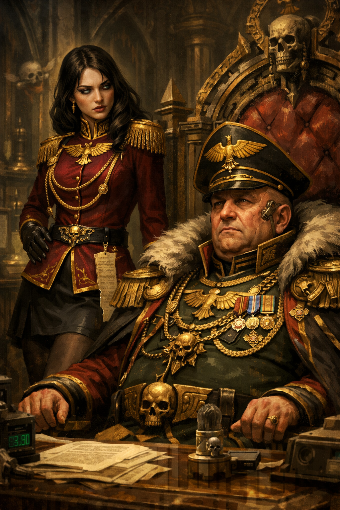

The halls of the High Administratum always carried a specific scent: ancient parchment dust, heavy incense, and aged amasec. Aurelia von Wald had grown accustomed to this atmosphere. It belonged to those who held the quill while others held the sword. The Governor was muttering again about promethium quotas, his voice drowning in the mechanical hum of the life-support throne keeping his decrepit body functional.
His fingers tremble as he signs the edicts. The old fool doesn't even notice when I alter the figures in the reports. He is the past of this planet; I am its inevitable future.